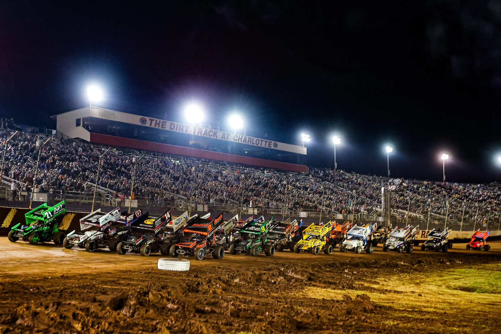
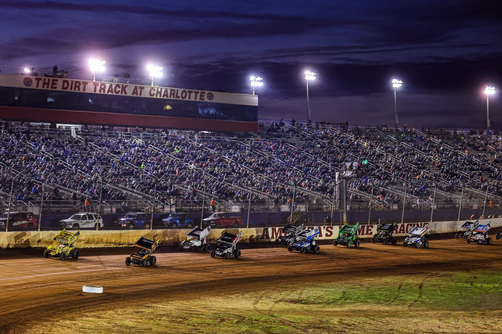

Logan Seavey and Abacus Racing Part Ways
Seavey stepped away from Abacus Racing effective immediately after four years together. He has no plans in place for 2027.
Read the story →Latest racing news
All news →Logan Seavey and Abacus Racing Part Ways
Seavey stepped away from Abacus Racing effective immediately after four years together and has no 2027 plans in place yet. Source: Logan Seavey Racing.
November 4, 2026 Preview · POWRi 410POWRi 410 Sprints Close 2026 Season at Texas Motor Speedway Dirt Track
The Deuces Wild Championships runs Nov. 5-7 in Fort Worth, paying $5,000 and $7,000 to win, with the POWRi 410 title decided. Source: POWRi Texas.
November 4, 2026 This Day in History · Nov. 4Nov. 4, 1998: Mark Kinser Wins Channellock Fall Classic at Las Vegas
Kinser held off Peter Murphy for his 12th WoO win of 1998 in the season finale as Steve Kinser celebrated his 15th title. Sources: WoO race report via The Auto Channel, Las Vegas Sun, The Third Turn.
November 4, 2026 This Day in History · Nov. 4Nov. 4, 1945: Kenny Weld Is Born in Kansas City
The four-time Knoxville Nationals winner and three-time Williams Grove National Open champion later founded Weld Tech. Sources: National Sprint Car Hall of Fame, EMPA, The Third Turn.
November 4, 2026 Preview · USAC Midgets · 360 SprintsKyle Larson to Race USAC Midgets and 360 Sprints at Hangtown 100
Larson will pull double duty Nov. 13-14 at Placerville, including Saturday’s 100-lap, $10,000-to-win USAC midget finale. Source: FloRacing.
November 4, 2026 Award · USAC National SprintsCale Coons Named 2026 USAC National Sprint Car Rookie of the Year
Coons won once, finished 11th in points and led the series with 16 heat wins in a full 48-race debut. Source: USAC / FloRacing.
November 4, 2026 Team news · World of OutlawsKnoxville Raceway Extends Partnership with World of Outlaws, DIRTVision
Knoxville Raceway extended its sanctioning and streaming partnership with the World of Outlaws and DIRTVision through 2031. Source: World of Outlaws.
November 3, 2026 Preview · World of OutlawsGravel Eyes Historic Three-Peat at Charlotte World Finals
Gravel leads Michael Kofoid by 124 points entering the World Finals (Nov. 4-7) at The Dirt Track at Charlotte. Only Kinser, Schatz and Sweet have won three straight titles.
November 2, 2026 Results · New ZealandAllard Wins Season Opener at Baypark
Jonathan Allard won Baypark Speedway's season-opening meeting, holding off Dean Brindle by 0.893 seconds.
October 27, 2026 Results · 410 Sprint carsTanner Thorson Wins Trophy Cup Finale; Landon Brooks Takes Trophy Cup Title
Thorson won the 50-lap 410 A-main from 15th ($10,000). Landon Brooks finished 4th from 22nd to clinch the Trophy Cup 32 title ($30,000); Tanner Holmes won the Three Cup Challenge.
November 1, 2026 Weekly previewThis week: World of Outlaws World Finals decide the title at Charlotte
Gravel leads Kofoid by 124 points into four nights at Charlotte; POWRi, USCS and Top Gun close their seasons.
November 1, 2026 Results · 410 Sprint carsTanner Thorson Wins Trophy Cup Night 2 at Thunderbowl
Thorson won the 30-lap 410 feature from 4th after leader Kaleb Montgomery lost power on the last lap. Daison Pursley was second, D.J. Netto third.
October 31, 2026 Championship · World of OutlawsGravel, Big Game Motorsports Lead WoO Points Toward Third Straight Title
David Gravel leads Michael Kofoid by 124 points with only World Finals at Charlotte (Nov. 4-7) remaining. Source: World of Outlaws.
October 31, 2026 Results · USAC MidgetsEdwards Wins USAC Western States Midget Finale; Lewis Clinches Title
Drake Edwards won the finale at Kern County Raceway and Michael Lewis clinched the 2026 championship. Source: USAC.
October 31, 2026 Championship · USAC CRA · Non-wingKevin Johnson Wins Third Straight USAC CRA Sprint Car Title
Johnson won the 2026 USAC CRA Sprint Car championship, his third consecutive series title. Source: USAC.
October 31, 2026 Championship · High LimitAbreu Crowned 2026 High Limit Champion at Awards Celebration
Rico Abreu was honored in Fort Worth after finishing 31 points ahead of Giovanni Scelzi. Source: Dirt Track Digest.
October 31, 2026 Results · USAC East CoastChelby Hinton Wins USAC East Coast Non-Winners Showdown at Bridgeport
Hinton won the 20-lap Malley Pool Water Non-Winners Showdown at Bridgeport Motorsports Park.
October 31, 2026 Results · World of OutlawsBuddy Kofoid Wins World of Outlaws Short Track Nationals at Texarkana
Kofoid won the 40-lap, $25,000-to-win Short Track Nationals at Texarkana 67 Speedway, his 17th World of Outlaws win of 2026.
October 31, 2026 Results · World of OutlawsCarson Macedo Wins Jason Johnson Classic at Texarkana
Macedo won the 41-lap, $20,000 Jason Johnson Classic at Texarkana 67 Speedway in the Jason Johnson Racing No. 41.
October 31, 2026 Team news · USACBriggs Danner Parts Ways with Hogue Racing After 2026
Danner leaves the No. 39 after the 2026 USAC season and is a free agent heading into 2027.
October 30, 2026 Results · 410 Sprint cars · Just inJustin Peck Wins Trophy Cup Night 1 at Thunderbowl
Peck took the lead on lap one from 4th and led all the way. Nights 2 and 3 are still to come.
October 30, 2026 Team news · High Limit · Just inKerry Madsen Lands Full-Time 2027 High Limit Ride in Dutcher #17GP
After finishing 2026 in the car, Madsen stays in the Michael Dutcher Motorsports #17GP for a full High Limit season.
October 30, 2026 Driver newsKaleb Johnson and TKS Motorsports set for 2027
Johnson goes full-time in the No. 2KS for Troy and Tammy Renfro, with Knoxville and Huset’s on the plan.
October 29, 2026 Team news · USACJerry Petty Steps Back After Back-to-Back Titles with Kyle Cummins
Petty Performance Racing’s national sprint car team won’t continue into 2027 after two straight USAC titles.
October 29, 2026 Championships2026 Series Champions Update + World Finals Preview
Abreu (High Limit) and Cummins (USAC) are champions; Gravel leads Kofoid by 124 into Charlotte.
October 29, 2026 Midget racingKeith Kunz Motorsports to close after 2026 season
Kunz announced the closure in an interview with DIRTVision and plans to join 4 Kings Racing.
Earlier Race recap · High LimitScelzi wins Texas finale, Abreu clinches High Limit title
Scelzi swept the finale weekend, but Abreu held off his late charge to win a second straight High Limit title.
October 20, 2026 Driver newsSilly season 2027: Will World of Outlaws drivers move to High Limit?
Brady Bacon is locked into the Vermeer 55 for 2027, and the bigger question is whether any World of Outlaws drivers follow him to High Limit.
October 20, 2026Upcoming race weekend
Next major · World of Outlaws · Nov 4–7
World of Outlaws World Finals, The Dirt Track at Charlotte
Four nights in Concord, N.C., with World of Outlaws Sprint Cars, Late Models and Super DIRTcar Series Big-Blocks.


No events match those filters yet. Try another country or discipline.
Dates from the series and track schedules. Check the official sites for start times and any changes.
Latest results
- Sprint car · Trophy Cup · Sat, Oct 31Trophy Cup 32 Finale, Thunderbowl RacewayThorson won the 50-lap 410 A-main from 15th ($10,000). Landon Brooks finished 4th from 22nd to clinch the Trophy Cup 32 title ($30,000); Tanner Holmes won the Three Cup Challenge. Top 5: Thorson, Jett Barnes, Holmes, Brooks, Justin Peck.Full story →
- Sprint car · Trophy Cup · Fri, Oct 30Trophy Cup 32 Night 2, Thunderbowl RacewayTanner Thorson won the 30-lap 410 feature from 4th after leader Kaleb Montgomery lost power on the last lap. Daison Pursley second, D.J. Netto third.Full story →
- Sprint car · USAC East Coast · Fri, Oct 30Non-Winners Showdown, Bridgeport Motorsports ParkChelby Hinton won the 20-lap feature from 3rd for his first sprint car win. Kyle Spence second, Joe Kata third.Full story →
- Sprint car · Trophy Cup · Thu, Oct 29Trophy Cup 32 Night 1, Thunderbowl RacewayJustin Peck won the 30-lap 410 feature from 4th. Jace Park was second, Jake Andreotti third. Nights 2–3 on Oct 30–31.Full story →
- Sprint car · USAC · Sat, Oct 24Western World finale, Central Arizona RacewayGavin Miller won the 35-lap feature ($42,450), his second career USAC National Sprint win. Kevin Thomas Jr. was second, Justin Grant third.Full results via USAC →
- Sprint car · World of Outlaws · Sat, Oct 24Short Track Nationals, Texarkana 67 SpeedwayMichael Kofoid won the 40-lap feature on a late restart, his 17th win of 2026. Cole Macedo was second, Garet Williamson third.Full story →
- Sprint car · World of Outlaws · Fri, Oct 23Jason Johnson Classic, Texarkana 67 SpeedwayCarson Macedo won the 41-lap feature. David Gravel was second, Sheldon Haudenschild third.Full story →
- Sprint car · High Limit · Sat, Oct 17Season finale, Texas Motor Speedway dirtGiovanni Scelzi led all 30 laps and beat Rico Abreu by 0.202 seconds. Abreu clinched the series title.Full results via Speed Sport →
- Sprint car · USAC · Sat, Oct 17Bomb City 40, Route 66 Motor SpeedwayGavin Miller led all 40 laps. Cale Coons was second, Justin Grant third.Full results via USAC →
Wing sprint cars
Section →Scelzi wins Texas finale, Abreu clinches High Limit title
Racing links
Sites, shows and channels we follow. Not affiliated with us.About
I’ve been obsessed with sprint cars my whole life. I have the pictures to prove it: me in a diaper, “working” on a sprint car.
I’ve worked on them, traveled with them, and I’ve been to more races than I can count over the last four decades.
DirtSprintCars.com is independent. I built it to help feed my obsession, help people get good info quickly, and hopefully help the sprint car community grow: more eyes on the racing, the drivers, the teams and the people who keep it going every weekend.
And yes, I know midgets aren’t exactly sprint cars. I like them too, so deal with it.
Write or shoot for us
This sport is bigger than one guy with a website. If you write, take photos or shoot video, I want to hear from you.
Race recaps, driver features, track stories, photo galleries, local short-track coverage. Tell me what you do and send a link to your work. I’ll get back to you.
Tear Off Weekly
A quick roundup of dirt sprint car and midget racing news, results, schedules and stories worth following.
Race-night gear
Buying guides and original DirtSprintCars.com merchandise. Affiliate links are always disclosed.